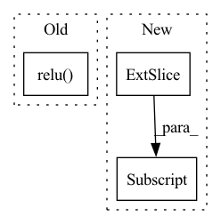

Pattern ID :13475
Before Change
// BxCxL
theta = torch.mean(x, axis=-1)
theta = self.fc1(theta)
theta = self.relu( theta)
theta = self.fc2(theta)
theta = 2 * self.sigmoid(theta) - 1
relu_coefs = theta.view(-1, self.channels, 2*self.k) * self.lambdas + self.init_vAfter Change
elif self.conv_type == "2d":
// BxCxHxW -> HxWxBxCx1
x_perm = x.permute(2, 3, 0, 1).unsqueeze(-1)
output = x_perm * relu_coefs[:, :, :self.k] + relu_coefs[:, :, self.k:]
// HxWxBxCx2 -> BxCxHxW
result = torch.max(output, dim=-1)[0].permute(2, 3, 0, 1)
return resultIn pattern: SUPERPATTERN
Frequency: 4
Non-data size: 3
Instances Fragment ID: 45465749
Project Name: islanna/dynamicrelu
Commit Name: 1ee4394be4c9e5517d7dc2e5605416b65b321e53
Time: 2020-04-14
Author: slizhikova.a.v@gmail.com
File Name: dyrelu.py
M Class Name: DyReLUB
N Class Name: DyReLUB
M Method Name: forward(2)
N Method Name: forward(2)
M Parent Class: DyReLU
N Parent Class: nn.Module
M File Name: dyrelu.py
N File Name: dyrelu.py
M Start Line: 55
M End Line: 66
N Start Line: 62
N End Line: 80
Before Change
self.upsample_bn_3 = pax.nn.BatchNorm1D(num_output_channels, True, True, 0.99)
def __call__(self, mel):
x = jax.nn.relu( self.input_bn(self.input_conv(mel)))
res_1 = jax.nn.relu(self.dilated_bn_1(self.dilated_conv_1(x)))
x = x[:, 1:-1] + res_1
res_2 = jax.nn.relu(self.dilated_bn_2(self.dilated_conv_2(x)))
x = x[:, 2:-2] + res_2After Change
res_2 = jax.nn.relu(self.dilated_conv_2(x))
x = x[:, 2:] + res_2
res_3 = jax.nn.relu(self.dilated_conv_3(x))
x = x[:, 4:] + res_3
x = jax.nn.relu(self.upsample_conv_1(x))
x = jax.nn.relu(self.upsample_conv_2(x)) Fragment ID: 45465748
Project Name: ntt123/pax
Commit Name: b4befe78fb96fea04104c27a6536f875f9e57ba1
Time: 2021-10-25
Author: 9960521+NTT123@users.noreply.github.com
File Name: examples/wave_gru/model.py
M Class Name: UpsamplingNetwork
N Class Name: UpsamplingNetwork
M Method Name: __call__(2)
N Method Name: __call__(2)
M Parent Class: pax.Module
N Parent Class: pax.Module
M File Name: examples/wave_gru/model.py
N File Name: examples/wave_gru/model.py
M Start Line: 41
M End Line: 49
N Start Line: 35
N End Line: 47
Before Change
// Gate the cell and state / outputs.
output_conv = layers.SNConv2D(num_channels, self._kernel_size, sn_eps=self._sn_eps)
c = F.relu( output_conv(gated_input))
out = update_gate * prev_state + (1.0 - update_gate) * c
new_state = out
return out, new_stateAfter Change
outputs = []
for step in range(x.size(1)):
// Compute current timestep
output, hidden_state = self.cell(x[:, step, :, :, :] , hidden_state)
outputs.append(output)
// Stack outputs to return as tensor
outputs = torch.stack(outputs, dim=0) Fragment ID: 45465751
Project Name: openclimatefix/skillful_nowcasting
Commit Name: b080785f5f559396d0b7e1a52d1c6d9a948d9439
Time: 2021-11-08
Author: jacob@bieker.tech
File Name: nowcasting_gan/layers/ConvGRU.py
M Class Name: ConvGRU
N Class Name: ConvGRU
M Method Name: forward(3)
N Method Name: forward(3)
M Parent Class: torch.nn.Module
N Parent Class: torch.nn.Module
M File Name: nowcasting_gan/layers/ConvGRU.py
N File Name: nowcasting_gan/layers/ConvGRU.py
M Start Line: 19
M End Line: 51
N Start Line: 70
N End Line: 78
Before Change
def forward(self, x):
batch_size = x.shape[0]
x = x.reshape((batch_size, -1)).float()
x = F.relu( self.dense(x))
x = F.softmax(self.logits(x), dim=-1)
return xAfter Change
out = self.transformer(x)//shape of out T*N*D
// Gather the last relevant hidden state
out = out[-1,:,:] // N*D
// FC layers
z = self.dropout(out) Fragment ID: 45465750
Project Name: bioshape-lab/pirounet
Commit Name: 149d8ab584d8a5bd20c5f508a727bb53b470cc0f
Time: 2022-05-17
Author: papillon@umail.ucsb.edu
File Name: move/classifiers.py
M Class Name: TransformerClassifier
N Class Name: TransformerClassifier
M Method Name: forward(4)
N Method Name: forward(2)
M Parent Class: PositionalEncoding
N Parent Class: nn.Module
M File Name: move/classifiers.py
N File Name: move/classifiers.py
M Start Line: 36
M End Line: 42
N Start Line: 72
N End Line: 87